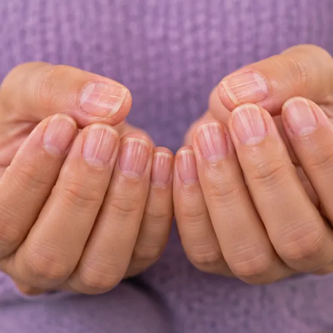
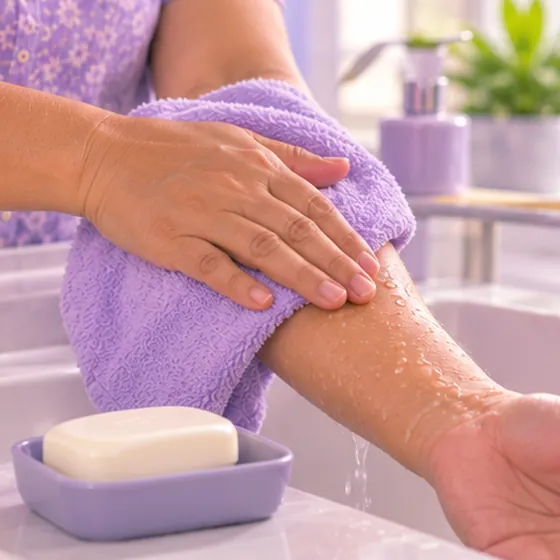
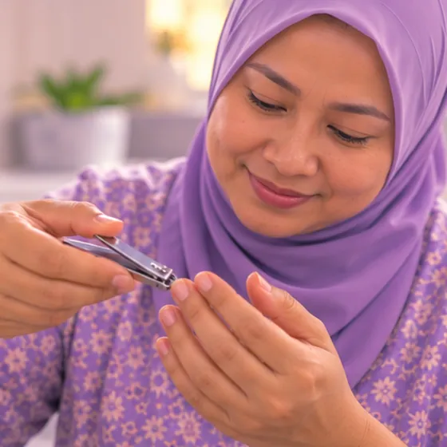

Hand eczema
A skin problem that makes the skin of the hands dry, red, itchy and cracked
What it is
Hand eczema is inflammation of the skin on the hands. The skin turns dry, red and itchy, and may crack or blister. It often flares up after contact with water, soap or cleaning products.
- Hands and fingers
- Wet work, soaps, cleaners
- Dry, itchy, cracked skin
- Which doctor
- Family doctor or skin doctor (dermatologist)
- Common in
- Anyone; more in wet-work jobs and in people with eczema, asthma or hay fever
- Contagious
- No
- Course
- Often comes and goes; gentle hand care and avoiding triggers can keep it calmer
Common signs

Dry, flaky skinXerosis (dry skin) 
Itchy skinPruritus 
Red rashRash 
Brittle, ridged nailsBrittle nails
Why it happens
Dust or chemicals at workOccupational exposure
Other causes
- Irritants: frequent hand washing, soap, sanitiser, detergents, water and some chemicals
- Allergies to things touched, such as rubber or latex, metals like nickel, fragrance or some plants
- A personal or family history of eczema, asthma or hay fever
- Dry weather, stress and tiredness can make it worse; sometimes the cause is not clear
See a doctor first if
- Swelling of the face or lips, or trouble breathing after contact with something: call 999
- Clusters of painful blisters or sores with fever or feeling very unwell: see a doctor the same day
- Skin that is weeping, crusted, very painful, hot or swollen, or has pus: it may be infected
- Deep cracks that bleed, or a rash that spreads up the arms or to other parts of the body
- No improvement after some weeks of careful hand care, or it keeps coming back or affects work or sleep
If any apply, please see a doctor before a session.
This page is general information. Please keep taking your normal medicine and keep seeing your doctor.
Keep taking your normal medicine and keep seeing your doctor. Our session is a gentle support and does not replace medical care.
Looking after yourself

Wash gently and pat dryGentle skin hygiene 
Keep the skin moisturisedEmollient care 
Try not to scratch; keep nails shortAvoid scratching 
Ask your pharmacistPharmacist advice
More ways to look after yourself
- Wear cotton-lined gloves for wet work or cleaning, and take off rings before washing
Tell your therapist
- Broken, red or sore skin
- A severe allergy
- Fever or an active infection
- Pregnancy
Your therapist will go through this with you before starting.
Questions and answers
What is Hand eczema?
A skin problem that makes the skin of the hands dry, red, itchy and cracked. Hand eczema is inflammation of the skin on the hands. The skin turns dry, red and itchy, and may crack or blister. It often flares up after contact with water, soap or cleaning products.
What are the common signs of Hand eczema?
Dry, flaky skin · Itchy skin · Red rash · Brittle, ridged nails
Why does Hand eczema happen?
Dust or chemicals at work
How can I look after myself with Hand eczema?
Wash gently and pat dry · Keep the skin moisturised · Try not to scratch; keep nails short · Ask your pharmacist
Can an AI Body Master session help with Hand eczema?
A session is gentle, needle-free meridian support for your wellbeing. It does not treat or cure Hand eczema and never replaces your medicine or your doctor. Tell your therapist about it before the session starts.
Related conditions
References: General information based on public health sources such as Mayo Clinic, NHS, Cleveland Clinic and NCBI StatPearls.
Page updated: 2026-11-09